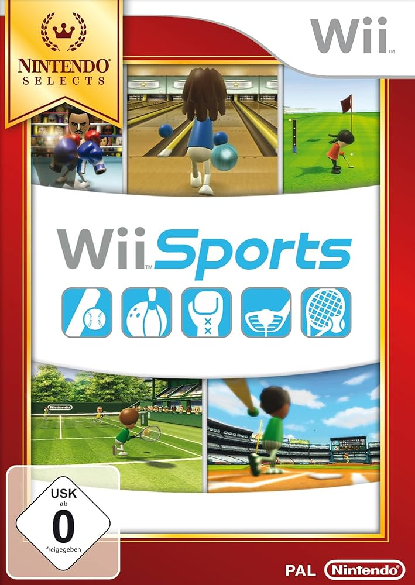

Wii Sports
Precio: 899,99€
Simplemente pura historia de España, cuanto mandos habran salido volando hacía un televisor por no ponerse el agarre de la muñequa cuando se jugaba al beisbol, precio de coleccionismo. ¡JUEGO PARA DISTINTOS!.
Personajes destacados
- Mii del Jugador:El personaje principal es un Mii, un avatar personalizado creado por el jugador. Representa al usuario en todos los deportes, y su apariencia puede adaptarse con rasgos caricaturescos y ropa sencilla.
- Matt:Uno de los Miis más conocidos, especialmente famoso por ser el entrenador y oponente final en el boxeo. Es reconocido como el "jefe final" no oficial del juego por su dificultad y actitud seria.